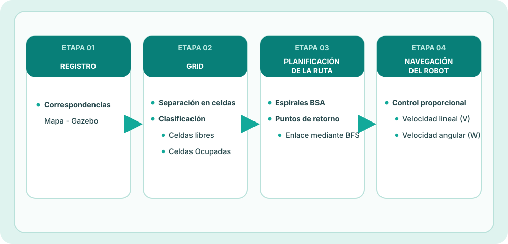
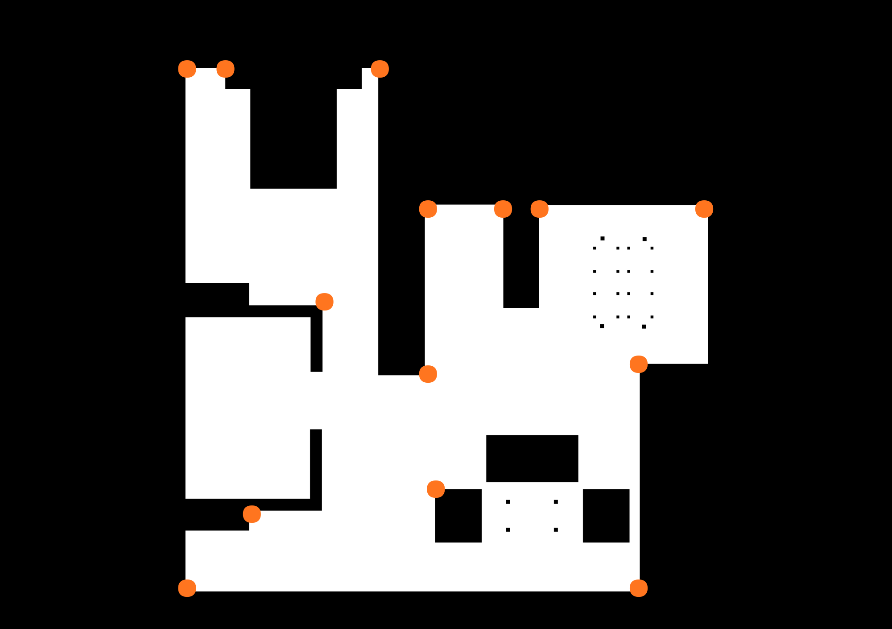
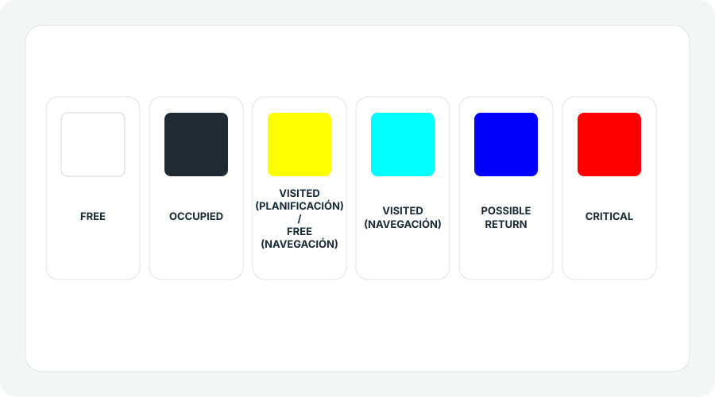
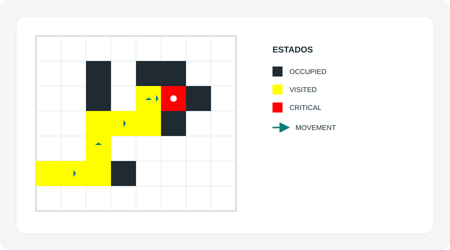
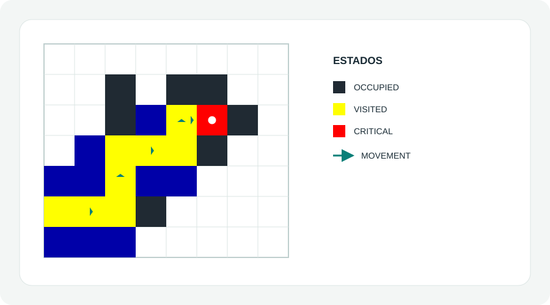
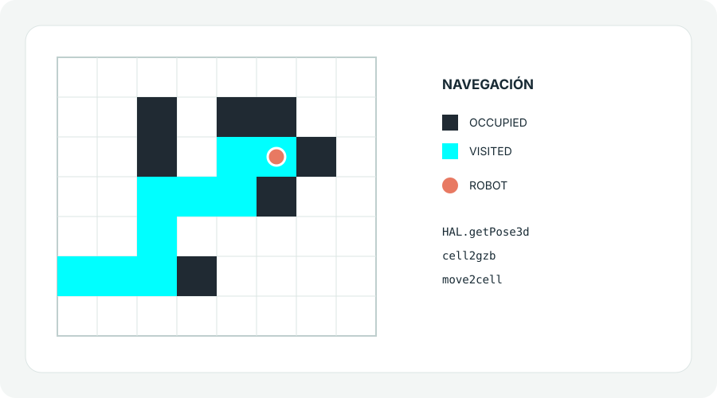

Planificación de cobertura para un robot aspirador localizado
en un entorno doméstico.
Práctica 1
Objetivo
El objetivo de esta práctica es, dado el mapa de una casa,
planificar la ruta por la que debe pasar un robot aspirador.
Para planificar la ruta, el objetivo es ir enlazando espirales,
generadas mediante el algoritmo BSA, y determinando posibles
puntos de retorno hasta completar el mapa.
Este es el pipeline que se ha seguido para esta práctica:

El desarrollo se ha dividido en los siguientes ficheros de código:
main.py Encargado del programa principal y la navegación del robot
register.py Encargado de generar el registro del mapa y generar las correspondencias entre Píxeles, Coordenadas y Celdas
map_processing.py Encargado de aplicar la erosión al mapa, generar el array de celdas y clasificarlas en libres y ocupadas.
Registro entre el mapa y Gazebo
En primer lugar, se implementa un registro del mapa. Es decir,
se obtiene la correspondencia entre las posiciones del mapa,
representadas mediante píxeles, y las posiciones del mundo de
Gazebo, representadas mediante coordenadas de tipo float.
Para ello, al inicio del desarrollo de la práctica, obtuve
8 puntos del mapa y busqué la correspondencia de esas posiciones
en el mundo de Gazebo.
Sin embargo, durante las pruebas del código me di cuenta de que,
debido a la forma en la que se habían obtenido estos puntos,
el robot acumulaba bastante error y se chocaba con distintas partes
de la casa, pese a aplicar una operación de erosión
sobre la imagen.
Para reducir ese error, revisé las correspondencias y amplié el conjunto
de 8 a 15 puntos distribuidos por el mapa. De este modo, se reduce el error o la desviación, que
pueda producir un punto mal escogido a las trasformadas, puesto que los puntos
han sido selecionados "manualmente". Obtieniendo los siguientes puntos:

En register.py, las 15 parejas de píxeles del mapa y
coordenadas de Gazebo se usan para estimar la transformación afín y
calcular su inversa:
gzb2cell: posición del robot en Gazebo → fila y columna de la rejilla.
cell2gzb: fila y columna → coordenadas de Gazebo.
Procesamiento del mapa
Una vez obtenida la correspondencia entre Gazebo y el mapa, se procesa el mapa
dividiendo la imagen en celdas.
Para ello, he utilizado un tamaño de celda
de 22x22 píxeles, para favorecer la correspondencia
con el tamaño de la imagen del mapa.
Para el procesamiento del mapa se ha seguido el siguiente pipeline:
Erosión de la imagen.
Tras distintas pruebas, cambiando el tipo de kernel y el número
de iteraciones, se ha aplicado una erosión con un kernel en forma
de elipse y un tamaño de 30x30 píxeles.
Se utiliza una sola iteración, ya que este kernel produce una
erosión suficientemente agresiva.
División de la imagen en celdas.
La imagen se divide utilizando celdas de tamaño 22x22 píxeles.
Clasificación de las celdas.
Las celdas se clasifican en:
OCCUPIED: celdas ocupadas por obstáculos o situadas fuera
de la zona navegable del mapa. Se dejarán en color negro.
FREE: celdas por las que puede desplazarse
el robot. Se dejarán en blanco (antes de la planificación).
Convención de estados.
Cada celda puede tener los siguientes estados:
OCCUPIED: celdas ocupadas o situadas fuera
de la zona navegable del mapa.
FREE: celdas por las que puede desplazarse
el robot.
VISITED: celdas por las que ha pasado ya el robot. Durante la planificación son amarillas y durante la navegación, cian.
CRITICAL_POINT: celdas rodeadas por obstáculos físicos (obstáculos) o virtuales (que el robot ya haya pasado por
las celdas adyacentes). Estos puntos determinan el fin de una espiral.
POSSIBLE_RETURNS: celdas adyacentes a la ruta del robot. Cuando el robot termina una espiral,
busca el punto de retorno más cercano para iniciar la siguiente espiral en él.

Leyenda de los estados de cada celda.
Este procesamiento se ha implementado en el fichero map_processing.py.
Planificación de la ruta
Una vez obtenido el mapa procesado, comienza la planificación
de la ruta. Para ello se sigue el siguiente pipeline:
Regla de movimiento.
La dirección actual se mantiene mientras la celda frontal sea libre.
Cuando queda bloqueada, se comprueban las direcciones globales en el
orden este, norte, oeste y sur. Si no hay ninguna celda libre
adyacente, la posición se marca como punto crítico.
En spiral_step, se conserva la dirección actual si sigue libre; solo al bloquearse se aplica la prioridad global:
Se obtiene la posición inicial del robot y se determina
una orientación inicial para comenzar la ruta.
Se genera la primera espiral utilizando el algoritmo BSA.
El funcionamiento utilizado se basa en los siguientes pasos:
Se determina si la celda siguiente, en la dirección
actual del movimiento, está libre.
Si está libre, se continúa avanzando en esa dirección.
available = []
for direction in range(len(DIRECTIONS)):
neigh = get_neighbour(row, col, direction)
if is_unvisited(neigh):
available.append(direction)
if current_dir in available:
return current_dir
Si la celda situada delante no está libre, se comprueban
las distintas direcciones siguiendo un orden de prioridad.
Se selecciona una celda libre y se continúa el recorrido
desde ella.
priorities = [EAST, NORTH, WEST, SOUTH]
for direction in priorities:
if direction in available:
return direction
Si no existe ninguna celda contigua libre, la posición
actual se declara como punto crítico.
Esto determina el final de la espiral actual.
if available.is_empty():
return None

Ejemplo de posible ruta generada por BSA
Durante el movimiento del robot, las celdas libres
situadas alrededor del recorrido se marcan como posibles
puntos de retorno.

Ejemplo de posible ruta generada por BSA e implementación de los puntos de retorno
Cuando se alcanza un punto crítico, se busca un punto
de retorno mediante un algoritmo BFS.
Una vez alcanzado el siguiente punto de retorno, se genera
una nueva espiral.
El proceso se repite hasta comprobar que el robot ha visitado
las celdas navegables del mapa.
Navegación del robot
En este punto del programa ya se dispone de la ruta completa
del robot y comienza la fase de navegación.
Para realizar el movimiento se ha implementado un controlador
proporcional tanto para la velocidad lineal como para la velocidad
angular.
Al robot se le comanda desplazarse hacia el centro de cada celda,
con una tolerancia de distancia de 0.1 y una tolerancia angular de 0.06.
Además, la velocidad lineal se modifica en función de la distancia
restante hasta el centro. Se definen dos niveles de reducción: si el
error es menor o igual que 2 × d_tolerance (0,2 m), la
velocidad queda limitada a 0,15 m/s; si es menor o igual que
d_tolerance (0,1 m), el límite baja a 0,09 m/s. Así se
busca que el robot se acerque al objetivo más despacio.
Orden de las condiciones.
En move2cell se comprueba primero si
distance_error < d_tolerance y, en ese caso, el robot
se detiene y retorna. Por ello, el límite de 0,09 m/s no llega a
aplicarse en una aproximación normal por debajo de 0,1 m: la parada
ocurre antes. El límite de 0,15 m/s sí actúa entre 0,1 y 0,2 m.
Parámetros y umbrales principales de move2cell (distancia
en metros y ángulos en radianes):
d_tolerance = 0.1
a_tolerance = 0.06
# Giro para corregir orientación: V = 0
kp_w = 1.0 # W limitada a ±0.35
# Avance y corrección angular fina
kp_vel = 0.9 # V limitada a 0.05–0.30
kp = 0.25 # W limitada a ±0.04
# Si abs(distance_error) <= d_tolerance: V máxima de 0.09
# Si abs(distance_error) <= 2 * d_tolerance: V máxima de 0.15
# Si abs(angle2command) < 0.02: W = 0

Ejemplo de navegación
Resultados y conclusiones
A continuación se adjunta un vídeo acelerado de la ejecución
completa del código:
Valoración del resultado
En la ejecución anterior se observa una cobertura aproximada del 75 %: el robot completa una parte
amplia del recorrido, aunque quedan ciertas zonas navegables sin cubrir.
El registro ha sido de las partes más importantes de la práctica.
Incluí más puntos de correspondencia para evitar que el ajuste
pudiera "desviarse" en caso de que se hubiera tomado alguno de los puntos
con mayor error, puesto que los puntos se han tomado "a mano", moviendo el robot en Gazebo y
observando el pixel del mapa al que pudiera corresponder.
Por otro lado a lo largo de la práctica, también he probado procesamientos diferentes del mapa:
con kernels rectangulares, elípticos, incrementando y disminuyendo el tamaño y las iteraciones.
O la dilatación de ciertas zonas (como la mesa al lado de la mesa del comedor), que durante las
pruebas, era la zona en la que más colisiones tenía el robot. Sin embargo, el procesamiento con el
que mejores resultados he obtenido, ha sido erosionar el mapa completo con un kernel con forma de
elípse de 30x30 a una iteración.
Estos ajustes respondían a los choques que observé durante las pruebas en
distintas partes del entorno, como esquinas y mesas. Fui revisando a
la vez el registro y la erosión para que la rejilla representara mejor
el espacio transitable y mantuviera un margen de seguridad. Además, utilicé el mapa corregido y también, conseguí
reducir choques en esa zona.
No obstante, este "margen" tiene su coste, la erosión del mapa descartar pasillos o
bordes de las habitaciones por las que el robot si podía pasar, reduciendo la posibilidad
de cubrir ciertas zonas del mapa. Además, algunas espirales dejan
pequeñas celdas libres sin visitar, que para alcanzarlas después da lugar a un desplazamiento largo
para cubrir una zona pequeña.
Mejoras para una siguiente iteración
Comparar y combinar tanto operaciones de erosión sobre el mapa, para tratar
de reducir ese "margen" y esas zonas por las que sí puede pasar el robot, pero no
accede por el procesamiento del mapa.
Tener en cuenta las celdas libres próximas al generar cada espiral,
con el objetivo de reducir huecos pequeños y retornos largos.